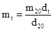
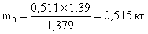
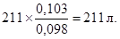

ДЕПАРТАМЕНТ СТРОИТЕЛЬСТВА
НАУЧНО-ТЕХНИЧЕСКОЕ УПРАВЛЕНИЕ
МОССТРОЙЛИЦЕНЗИЯ
ИНСТРУКЦИЯ
ПО ПРИМЕНЕНИЮ
ХИМИЧЕСКИХ ДОБАВОК
В ЦЕМЕНТНЫХ РАСТВОРАХ
ПРИ ВОЗВЕДЕНИИ
ЖИЛЫХ И ОБЩЕСТВЕННЫХ ЗДАНИЙ
В ЗИМНЕЕ ВРЕМЯ
ВСН 33-95
Москва - 1996
Инструкция по применению химических добавок в цементных растворах при возведении жилых и общественных знаний в зимних условиях разработана лабораторией сборного домостроения НИИМосстрой (заместитель директора института по научной работе к. т. н. Ф. С. Белавин, заведующий лабораторией к. т. н. Ю. Ф. Бирулин, научный сотрудник З. И. Глухова). При участии Мосстройлицензии (Ю.И. Столяров, к. т. н. В.Д. Фельдман).
В Инструкции использованы материалы исследований, проведенных НИИЖБ Минстроя РФ, ЦНИИСК им. Кучеренко, центральной строительной лабораторией треста Оргтехстрой Главволговятскстроя и опыт применения растворов с противоморозными добавками на строительстве жилых и общественных зданий в зимнее время.
Инструкция предназначена для работников строительных организаций и содержит основные требования по применению противоморозных химических добавок в строительном растворе при температуре ниже 0 °С, а также методы контроля качества растворной смеси и готового раствора. Инструкция согласована с техническим управлением АОХК «Главмосстрой».
|
Департамент строительства Научно-техническое управление |
Ведомственные строительные нормы Инструкция |
ВСН 33-95 ДС |
1.1. Инструкция распространяется на приготовление и применение строительного раствора с химическими добавками в зимних условиях при возведении жилых и общественных зданий различных конструктивных схем.
1.2. Надежность возводимых зимой зданий должна обеспечиваться достаточной фактической несущей способностью их конструкций на любом этаже возведения. С этой целью в проектах должны указываться требования к минимальной поэтажной прочности раствора для различных стадий готовности здания или сооружения, а на строительной площадке - выполняться периодический контроль его прочности. Результаты контроля должны подтверждать наличие требуемой проектом минимальной прочности.
1.3. Время начала и окончания зимних работ зависит от температуры наружного воздуха. Условия работы считаются зимними, если среднесуточная температура ниже 5 °С, а минимальная суточная температура ниже 0 °С.
1.4. Инструкция предусматривает применение безобогревного метода монтажа конструкций со среднесуточной температурой до -20 °С.
1.5. Количество добавок (в процентах от массы цемента в пересчете на сухое вещество) определяется в зависимости от среднесуточной температуры воздуха (по данным прогноза Гидрометцентра Российской Федерации).
1.6. Марка строительного раствора с противоморозными добавками должна быть не ниже 50 (5 МПа).
1.7. Марку строительного раствора с противоморозными добавками следует принимать равной проектной (летней) марке раствора, если кладка или монтаж конструкций будет выполняться при среднесуточной температуре наружного воздуха не ниже -20 °С.
|
Внесена |
УТВЕРЖДЕНА Научно-техническим управлением «21» ноября 1995 г. |
Срок введения в действие 1 января 1996 г. |
1.8. Строительный раствор с противоморозными добавками запрещается применять:
- в зданиях и сооружениях, эксплуатируемых в условиях повышенной (более 60 %) влажности (бани, прачечные, влажные цеха);
- при возведении конструкций, расположенных в зоне переменного уровня воды и под водой или не имеющих специальной защитной гидроизоляции;
- при использовании заполнителей, содержащих реакционно-способный кремнезем (опал, халцедон, обсидиан, цеолит и др.);
- для кладки конструкций из силикатных материалов, эксплуатируемых в условиях переменного увлажнения - высыхания (цоколи, фундаменты).
2.1. Для приготовления строительного раствора с противоморозными добавками следует применять цементы с активностью не ниже М300 (30 МПа), с содержанием в цементном клинкере трехкальциевого силиката (C3S) более 45 % и трехкальциевого алюмината (С3А) не более 8 %.
Применение портландцементов с меньшим содержанием C3S, а также шлакопортландцементов и пуццолановых портландцементов допускается, если к строительному раствору не предъявляются требования интенсивного нарастания прочности на морозе. Рекомендуется применять цементы с пониженным количеством гипса (1 - 2 % от массы клинкера в пересчете на SO3), т.к. большее количество гипса приводит к уменьшению прочности раствора с противоморозными добавками.
Цементы должны удовлетворять требованиям ГОСТ 25328-82 или ГОСТ 10178-85*.
Запрещается применение:
глиноземистого цемента и цемента, изготовленного на его основе;
пуццоланового и всех разновидностей шлакопортландцементов при температуре -20 °С.
2.2. Песок для строительного раствора должен соответствовать требованиям ГОСТ 8736-85.
2.3. Вода должна удовлетворять требованиям ГОСТ 23732-79 и не содержать вредных примесей, влияющих на нормальное схватывание и твердение строительного раствора.
2.4. Противоморозные добавки должны удовлетворять требованиям соответствующих стандартов или других действующих нормативных документов:
- нитрит натрия в водном растворе - ТУ 38-10274-85;
- нитрит натрия кристаллический технический (натрий азотистокислый) ГОСТ 19906-74*;
- неслеживающийся нитрит натрия - ТУ 113-05-100-14-91;
- нитрат натрия технический - ГОСТ 828-77Е;
- нитродап (водный раствор натриевых солей нитрата, нитрита, хлорида, карбоната с незначительным количеством примесей в виде полуторных окислов) - ТУ 113-05-8-88 (согласована с ГОРСЭС г. Москвы № 3-22-395 от 16.10.89 г.);
- лигносульфонаты технические - ОСТ 13-183-83.
3.1. Состав строительного раствора необходимо подбирать в соответствии с требованиями СН 290-74 и корректировать с учетом применяемых материалов и пластифицирующего действия добавок.
3.2. Количество противоморозных добавок следует назначать в зависимости от средней температуры наружного воздуха в процентах от массы цемента в пересчете на сухое вещество (табл. 1).
Таблица 1
Рекомендуемые количества противоморозных добавок
|
Количество безводной соли, % от массы цемента в пересчете на сухое вещество |
|||||
|
нитрит натрия (в водном растворе), нитрит натрия кристал. |
неслеживающийся нитрит |
нитрат натрия |
нитродап |
нитрит натрия (в водном растворе) + ЛСТ |
|
|
От 0 до -5 |
2 - 3 |
2 |
3 |
2 - 3 |
2 + 0,2 |
|
От -6 до -10 |
4 - 5 |
4 |
5 |
4 - 6 |
4 + 0,2 |
|
От -11 до -15 |
6 - 7 |
6 |
7 |
6 - 7 |
6 + 0,2 |
|
От -15 до -20 |
- |
- |
- |
8 |
- |
4.1. Качество цементного раствора должно отвечать требованиям «Инструкции по приготовлению и применению строительных растворов» СН 290-74. Состав строительных растворов по сравнению с приведенным в Инструкции должен корректироваться с учетом применяемых материалов.
4.2. Для работ в зимнее время необходимо применять пластичные строительные растворы с подвижностью: 9 - 13 см для кладки из обычного кирпича и природного камня; 7 - 8 см - для кладки из пустотелого кирпича; 5 - 7 см - для монтажа конструкций.
С целью применения на монтаже растворов необходимой подвижности строители должны учитывать его срок годности, а завод-изготовитель товарного раствора должен в паспорте указать этот срок годности в часах.
4.3. Ориентировочно минимальный набор прочности строительного раствора на портландцементе с активностью не ниже М300 (30 МПа) и с противоморозными добавками, выдерживаемого при отрицательной температуре, должен быть не ниже приведенного в табл. 2.
Таблица 2
Нарастание прочности раствора с добавками при твердении на морозе
|
Средняя температура воздуха за период твердения, °С |
Прочность раствора; % от марочной, при сроках твердения, сут. |
||||
|
7 |
14 |
28 |
90 |
||
|
Нитрит натрия (в водном растворе) |
от 0 до -5 |
15 |
25 |
50 |
75 |
|
от -6 до -10 |
10 |
20 |
40 |
60 |
|
|
Нитрит натрия кристаллический |
от -11 до -15 |
5 |
10 |
30 |
50 |
|
Не слеживающийся нитрит натрия |
от 0 до -5 |
15 |
25 |
50 |
75 |
|
от -6 до -10 |
10 |
20 |
40 |
60 |
|
|
от -11 до -15 |
5 |
10 |
30 |
50 |
|
|
Нитрат натрия |
от 0 до -5 |
15 |
20 |
40 |
60 |
|
от -6 до -10 |
10 |
15 |
35 |
50 |
|
|
от -11 до -15 |
5 |
10 |
25 |
40 |
|
|
Нитродап |
от 0 до -5 |
15 |
25 |
45 |
90 |
|
от -6 до -10 |
10 |
15 |
25 |
60 |
|
|
от -11 до -15 |
5 |
10 |
20 |
50 |
|
|
от -15 до -20 |
0 |
5 |
10 |
40 |
|
|
Нитрит натрия (в водном растворе) + ЛСТ |
от 0 до -5 |
15 |
25 |
35 |
80 |
|
от -6 до -10 |
10 |
20 |
25 |
70 |
|
|
от -11 до -15 |
5 |
10 |
15 |
55 |
|
|
Примечание Указанные величины должны быть умножены при использовании быстротвердеющих портландцементов на коэффициент 1,2; низкоактивных портландцементов с НГ = 29 % - на коэффициент 0,8; шлакопортландцементов - на коэффициент 0,7. |
|||||
4.4. В случае замедления твердения строительного раствора с добавками следует применять дополнительный прогрев конструкций до температуры не выше +40 °С.
4.5. Морозостойкость строительного раствора с противоморозными добавками определяется при подборе состава и в дальнейшем не реже одного раза в 6 мес. только в случаях, оговоренных в проекте.
4.6. Водоудерживающая способность растворной смеси определяется на растворном узле по ГОСТ 5202-78* и должна составлять 76 %.
5.1. Централизованное приготовление водного раствора противоморозных и пластифицирующих добавок должно производиться на растворных узлах или передвижных механизированных установках, где предусматриваются механическое перемешивание (или перемешивание с помощью сжатого воздуха) и подогрев воды, а также раствора.
5.2. Для правильного дозирования добавки ее следует вводить в состав растворной смеси в виде водного раствора рабочей концентрации (приложение 1 - 4).
5.3. В целях экономии производственных площадей водный раствор добавки следует готовить высокой плотности (концентрация по массе - не менее 10 %, но не более 33 %).
5.4. При использовании комплексных противоморозных добавок следует готовить отдельно концентрированный раствор каждого компонента.
5.5. Для повышения скорости растворения добавок необходимо подогревать воду до определенной температуры при применении нитрита натрия, нитрата натрия, нитродапа, жидкого концентрата ЛСТ - до 40 °С, твердого концентрата ЛСТ - до 80 °С.
5.6. Для обеспечения равномерной концентрации добавок приготовленные рабочие и концентрированные водные растворы необходимо тщательно перемешивать перед употреблением.
Категорически запрещается применение водного раствора, имеющего осадок нерастворившихся солей.
5.7. Приготовленный концентрированный водный раствор добавки, очищенный от грязи, насосами перекачивается в расходные металлические емкости, расположенные над дозаторным отделением. Для предотвращения замерзания емкости должны быть утеплены и снабжены подогревающими устройствами.
Объем расходных емкостей рассчитывается на запас водного раствора, достаточного не менее чем на 4 ч работы.
5.8. ЛСТ необходимо вводить в растворную смесь в виде водного раствора 10 - 25 % концентрации.
6.1. Централизованное приготовление строительного раствора с противоморозными добавками должно осуществляться на механизированных растворных узлах, а при малых объемах работ - на механизированных передвижных установках.
6.2. Срок годности растворной смеси должен назначаться исходя из условия сохранения смесью удобоукладываемости до конца применения.
6.3. Приготовление строительного раствора с противоморозными добавками можно осуществлять как в теплых, так и в холодных помещениях. Температура воздуха на растворном узле не должна опускаться ниже -5 °С. Строительный раствор с противоморозными добавками можно готовить на подогретом или холодном песке, но при этом не допускается наличие смерзшихся комков.
6.4. Дозировка основных частей строительного раствора должна корректироваться при изменении вида, плотности и активности цемента, влажности и плотности песка, вида пластифицирующих добавок.
Дозировка производится по массе с помощью весовых дозаторов. Точность дозировки рабочего раствора противоморозных добавок при введении их в растворосмеситель необходимо обеспечивать также весовыми дозаторами. Точность дозирования цемента, воды и водных растворов противоморозных добавок должна составлять ±2 %, а песка ±3 % (ГОСТ 28013-89 «Растворы строительные. Общие технические условия»).
Весы и измерительные приборы дозаторов должны подвергаться проверке не реже 1 раза в 3 мес. органами ведомственного надзора и не реже 1 раза в год органами Госстандарта РФ.
6.5. При приготовлении раствора с добавкой нитрита натрия, нитрата натрия, нитродапа в растворосмеситель сначала следует загружать песок и водные растворы добавок, затем перемешивать их в течение 90 - 120 с, после чего засыпать цемент с последующим перемешиванием в течение 120 - 180 с.
6.6. Температура растворной смеси с противоморозными добавками на выходе из растворосмесителя должна быть не ниже -5 °С.
7.1. Смеси монтажные должны изготовляться в соответствии с требованиями технических условий ТУ 400-2-377-88 «Смеси сухие бетонные специализированные», ТУ 400-2-376-88 «Сухие смеси монтажные».
7.2. Дозирование цемента, песка и противоморозной добавки неслеживающегося нитрита натрия производится по массе.
Погрешность дозирования исходных материалов не должна превышать:
цемента и химических добавок ±1 %
песка ±0,5 %
7.3. Влажность сухих монтажных смесей должна быть не более 1 % по массе.
7.4. Приготовление раствора из сухих цементно-песчаных смесей осуществляется непосредственно на строительной площадке. Сухая растворная смесь поставляется в капсулах или мешках и на строительном объекте затворяется водой, указанной в рецепте до нужной подвижности.
7.5. С целью сохранения удобоукладываемости растворной смеси объем замеса должен быть достаточным, чтобы предотвратить потери раствора.
8.1. Растворную смесь с противоморозными добавками следует перевозить в неутепленной таре.
Для сохранения необходимой удобоукладываемости растворной смеси с противоморозными добавками температура ее при транспортировании и укладке не должна быть ниже -3 °С и выше 15 °С.
Растворную смесь следует перевозить в автомашинах со специальными кузовами, в т.ч. в автомашинах, имеющих установку для перемешивания раствора во время перевозки. Транспортирование растворных смесей в обычных кузовах бортовых автомобилей запрещается.
Выгрузка растворных смесей на землю запрещается.
Смеси, расслоившиеся при перевозке, перед употреблением должны быть перемешаны.
8.2. Растворная смесь на строительных площадках должна храниться в утепленных ящиках с крышками. Запрещается использовать замерзшую и отогретую горячей водой смесь.
8.3. Запрещается добавлять воду или водные растворы противоморозных добавок в готовую растворную смесь.
8.4. Готовая растворная смесь и сухая растворная смесь при транспортировании и хранении должны быть защищены от попадания снега или воды, загрязнения посторонними примесями распыления и утечки.
8.5. Транспортирование сухих цементно-песчаных смесей должно производиться в условиях, исключающих их увлажнение.
8.6. Предприятие-изготовитель сухих цементно-песчаных смесей обязано сопровождать каждую отправляемую партию продукции паспортом, в котором указывается:
- наименование предприятия-изготовителя;
- наименование и назначение продукции;
- номер рецепта, номер технических условий;
- номер партии готовой продукции и дата ее изготовления;
- количество отгруженной продукции;
- состав сухой смеси с указанием добавки (неслеживающегося нитрита натрия) - «ЯД»;
- количество воды затворения;
- условия и срок хранения.
8.7. Монтажные смеси, затаренные в транспортные капсулы и неупакованные, транспортируются только специальным автотранспортом.
9.1. Качество материалов, применяемых для приготовления строительного раствора с противоморозными добавками, следует контролировать в соответствии с требованиями стандартов.
9.2. В процессе приготовления строительного раствора необходимо контролировать: правильность дозирования материалов, составляющих раствор, и достаточность их перемешивания; чистоту заполнителей и отсутствие в них наледи и смерзшихся комьев; температуру заполнителей и воды перед загрузкой в растворосмеситель; соответствие количества вводимой добавки ожидаемой температуре воздуха; соответствие температуры и подвижности растворной смеси при выходе из растворосмесителя требованиям проекта производства работ.
9.3. Необходимо особо тщательно контролировать правильность дозирования добавок. Концентрацию исходных и рабочих растворов противоморозных добавок следует контролировать стандартными ареометрами не реже двух раз в смену. Появление осадка в водном растворе добавок или замерзание раствора недопустимы.
9.4. Температуру исходных материалов и растворной смеси при загрузке в растворосмеситель следует измерять с помощью технических термометров не реже чем через 2 ч.
9.5. Температуру наружного воздуха следует измерять не реже 3 раза в сутки.
9.6. Качество растворов с противоморозными добавками необходимо контролировать в соответствии с требованиями ГОСТ 5802-86.
9.7. Подвижность растворной смеси должна определяться для каждого состава раствора, а также при изменении качества материалов, вида вяжущего крупности и влажности песка, вида добавок.
При одном и том же качестве материалов подвижность растворной смеси следует определять не менее 3 раз в смену.
9.8. Контроль качества строительного раствора на растворном узле.
9.8.1. Отбор проб для испытания растворной смеси необходимо производить из автомашины (не менее чем из 3 различных мест) с глубины 100 - 150 мм. Объем средней пробы должен быть не менее 3 л.
9.8.2. Для оценки марочной прочности контрольного раствора должны изготовляться 2 партии (по 6 шт.) образцов-кубов с ребром 70,7 мм на отсасывающем основании (влажность не более 2 %, водопоглощение не менее 10 %).
Образцы должны находиться в нормальных условиях: формы, заполненные растворной смесью, должны выдерживаться до распалубки в камере с температурой 20 + 3 °С и относительной влажностью выше 90 %: после распалубки (через 24 + 2 ч после укладки) образцы должны храниться в вышеуказанных условиях в течение 3 сут., а остальное время до испытания - в помещении с относительной влажностью 65 + 10 % и той же температурой.
Контрольные образцы-кубы необходимо испытывать через 7 и 28 сут. в соответствии с ГОСТ 5802-86.
9.8.3. Данные о составе смеси, температуре материалов, смеси и наружного воздуха качестве введенной добавки, а также результаты испытания прочностных характеристик образцов на растворном узле должны фиксироваться в специальных журналах.
9.8.4. Результаты испытаний образцов раствора изготовитель обязан сообщать потребителю по первому требованию.
9.9. Контроль качества строительного раствора на строительной площадке.
9.9.1. Отбор проб растворной смеси с противоморозными добавками необходимо производить из доставившей ее автомашины или из рабочего ящика (не менее чем из 3 различных мест с глубины 100 - 150 мм). Объем средней пробы должен быть не менее 3 л.
9.9.2. Для контроля прочности строительного раствора на строительной площадке готовятся контрольные кубы с ребром 70,7 мм. После выравнивания поверхности образцов их маркируют и записывают в журнале испытаний дату изготовления.
9.9.3. Качество образцов-кубов должно быть не менее 9 для всех этажей, кроме 5 верхних; для 5 верхних этажей - по 3 при односекционных домах. При двух и более секциях необходимо изготовить не менее 18 контрольных образцов (по 9 образцов в двух разных секциях). Образцы должны храниться на открытом воздухе в тех же условиях, что и конструкции. Сверху образцы должны закрываться толем или другими рулонными материалами от попадания на них воды или снега.
По 3 образца с первых 5 этажей необходимо испытывать перед началом монтажа следующих этажей. Оставшиеся на этажах образцы следует испытывать по требованию лица, осуществляющего авторский надзор, или по окончании монтажа дома перенести в помещение с нормальными условиями и испытывать через 28 сут. дополнительного выдерживания.
9.9.4. Контрольные образцы необходимо испытывать после 3 ч оттаивания при нормальной температуре в сроки, необходимые для поэтапного контроля прочности кладки при ее возведении. Следует проводить испытания также через 28 сут. после выдерживания оттаявших кубов при положительной температуре. Одновременно необходимо испытывать не менее 3 образцов.
Перед испытанием на сжатие образцы следует измерить, взвесить на технических весах с точностью до 0,5 % и вычислить объемную массу, а результаты всех измерений занести в журнал испытаний.
9.10. Контроль качества строительного раствора методом отбора проб из швов кладки:
9.10.1. Контроль качества строительного раствора методом отбора проб из швов предусматривается для старых зданий, где отсутствуют готовые образцы-кубы. Пробы должны представлять собой пластинки размером не менее 50×50 мм. В каждой пробе должно быть 4 - 6 пластинок.
9.10.2. Количество и места отбора проб для проверки прочности в жилых домах и сооружениях следует устанавливать совместно с лицом, осуществляющим авторский надзор, в зависимости от принятых в проектах решений и загруженности конструкций.
В кирпичных зданиях рекомендуется отбирать с этажа в каждой секции 2 - 4 пробы. Если пробы отбираются из несущих конструкций, следует обеспечить немедленную заделку мест отбора проб. При отборе проб из подоконных участков кладки следует снять несколько кирпичей одного или двух верхних рядов и отделить раствор для пробы с участка шва, расположенного не ближе 50 мм от внутренней поверхности стены.
В полносборных зданиях пробы следует отбирать из горизонтальных швов между блоками или панелями.
9.10.3. При отборе проб необходимо составить акт, в котором указать наименование строительной организации и объекта, серию здания, проектную марку раствора, наличие противоморозной добавки и места отбора проб (в осях) по этажам.
9.10.4. Отобранные пробы необходимо замаркировать с указанием этажа, секции, места отбора проб (в осях), упаковать в полиэтиленовую пленку и направить в лабораторию, обеспечив сохранность их при транспортировании. До испытания образцы следует хранить при температуре наружного воздуха.
9.10.5. Из каждой доставленной пробы следует приготовить не менее 5 образцов в форме куба.
При толщине пробы менее 20 мм сначала выпиливают квадратные пластинки со сторонами, превышающими вдвое их толщину. Затем 2 пластинки склеивают в форме куба гипсовым тестом толщиной слоя не более 1 мм, этим же тестом выровняв верхнюю и нижнюю поверхности куба.
9.10.6. Приготовленные образцы должны испытываться не позднее чем через 2 ч после полного оттаивания.
9.10.7. Предел прочности при сжатии каждого образца следует вычислять как частное от деления величины разрушающей нагрузки на рабочую площадь образца: средний предел прочности при сжатии необходимо вычислять как среднее арифметическое результатов испытаний образцов-кубов. Если при испытании образцов, изготовленных из одной пробы, окажутся образцы, имеющие резкое отклонение от средних показателей прочности (более чем на 50 %), то показатель с наибольшим отклонением не учитывается.
Для перехода от среднего предела прочности испытанных образцов к пределу прочности образца-куба с ребром 70,7 мм необходимо использовать коэффициент 0,8.
9.10.8. Если строительный раствор при испытании показал низкую прочность (менее 0,8 МПа), то для определения способности раствора к последующему твердению необходимо провести дополнительные испытания через 3 сут. после выдерживания его в помещении при температуре 20 °С. Если при этом роста прочности раствора не наблюдается, из тех же мест следует провести повторный отбор проб для контрольных испытаний и при необходимости принять меры по усилению конструкции.
9.11. Наличие противоморозных добавок в строительных растворах необходимо определять по общепринятой методике (приложение 5).
10.1. Приготовление и транспортирование строительного раствора необходимо производить с соблюдением требований СНиП III-4-81 «Техника безопасности в строительстве».
10.2. К работе по приготовлению водных растворов противоморозных добавок допускаются рабочие не моложе 18 лет, прошедшие медицинское освидетельствование и обученные безопасным методам работ с химикатами.
10.3. Перед допуском к работе по приготовлению водных растворов с противоморозными добавками рабочие должны пройти инструктаж по технике безопасности.
10.4. Лица, занятые приготовлением водных растворов противоморозных добавок, должны быть снабжены спецодеждой, резиновыми сапогами, рукавицами, защитными очками и респираторами.
Перед использованием средств индивидуальной защиты необходимо проверить их исправность, а также наличие клейма испытаний и годность по сроку проверки.
10.5. Водный раствор противоморозных добавок должен приготовляться с помощью механизированных установок или другого оборудования, исключающего перемешивание вручную, в хорошо проветриваемом помещении.
10.6. Из-за высокой электропроводности растворной смеси с противоморозными добавками особое внимание следует обращать на соответствие технического состояния электроинструмента и механизмов действующим правилам техники безопасности.
10.7. Противоморозные добавки следует хранить в заводской таре с соответствующей маркировкой в специально оборудованном сухом складе на растворном узле.
10.8. Лицо, выдающее противоморозные добавки, должно предупреждать получателя о токсических свойствах добавок, а получатель должен расписываться об этом в специальном журнале, который хранится на складе.
10.9. По окончании работы с противоморозными добавками необходимо снять с себя все средства индивидуальной защиты и тщательно вымыть руки и лицо.
10.10. Противоморозные добавки не должны попадать на кожу и в пищу. При попадании добавок на кожу их следует тщательно смыть сильной струей воды.
10.11. Перед приемом пищи и курением необходимо тщательно вымыть руки и лицо. Пища должна приниматься в специально отведенных для этого местах.
10.12. Признаками отравления нитритом натрия или нитратом натрия, которое возникает через 10 - 15 мин после попадания соли в организм, являются посинение кончиков пальцев рук и ног и кончика носа, а также появление слабости и головокружения и ухудшение зрения.
10.13. При отравлении пострадавшего следует немедленно госпитализировать.
1. Цементы для строительных растворов. Технические условия ГОСТ 25328-82, ГОСТ 10178-85*.
2. Песок для строительных работ. Технические условия ГОСТ 8736-85.
3. Вода для бетонов и растворов. ГОСТ 23732-79.
4. Нитрит натрия в водном растворе. ТУ 38-10274-85.
5. Нитрит натрия кристаллический технический (натрий азотистокислый). ГОСТ 19906-74Е.
6. Неслеживающийся нитрит натрия. ТУ 113-05-100-14-91.
7. Нитрат натрия технический. ГОСТ 828-77Е.
8. Нитродап (водный раствор натриевых солей). ТУ 113-05-8-88.
9. Лигносульфонаты технические. ОСТ 13-183-83.
10. Инструкция по приготовлению и применению строительных растворов. СН 290-74.
11. Смеси сухие монтажные. ТУ 400-2-377-88.
12. Смеси сухие бетонные специализированные. ТУ 400-2-376-88.
13. Растворы строительные. Методы испытаний. ГОСТ 5802-86.
14. Техника безопасности в строительстве. СНиП III-4-80.
|
Концентрация раствора, % |
Плотность раствора при 20 °С, г/см3 |
Температурный коэффициент плотности |
Содержание безводной соли, кг |
Температура замерзания раствора, °С |
||
|
в 1 л раствора |
в 1 кг раствора |
в расчете на 1 л воды |
||||
|
2 |
1,011 |
0,00023 |
0,020 |
0,020 |
0,020 |
-0,8 |
|
4 |
1,024 |
0,00027 |
0,041 |
0,040 |
0,042 |
-1,8 |
|
6 |
1,038 |
0,00030 |
0,062 |
0,060 |
0,064 |
-2,8 |
|
8 |
1,052 |
0,00033 |
0,084 |
0,080 |
0,087 |
-2,9 |
|
10 |
1,065 |
0,00036 |
0,106 |
0,100 |
0,111 |
-4,7 |
|
11 |
1,071 |
0,00037 |
0,117 |
0,110 |
0,123 |
-5,3 |
|
12 |
1,078 |
0,00039 |
0,129 |
0,120 |
0,136 |
-5,8 |
|
14 |
1,092 |
0,00042 |
0,153 |
0,140 |
0,163 |
-6,9 |
|
15 |
1,099 |
0,00043 |
0,164 |
0,150 |
0,176 |
-7,5 |
|
16 |
1,107 |
0,00044 |
0,177 |
0,160 |
0,190 |
-8,1 |
|
17 |
1,114 |
0,00045 |
0,189 |
0,170 |
0,205 |
-8,7 |
|
18 |
1,122 |
0,00047 |
0,202 |
0,180 |
0,220 |
-9,2 |
|
19 |
1,129 |
0,00049 |
0,214 |
0,190 |
0,235 |
-100 |
|
20 |
1,137 |
0,00051 |
0,227 |
0,200 |
0,250 |
-108 |
|
21 |
1,145 |
0,00053 |
0,240 |
0,210 |
0,266 |
-11,7 |
|
22 |
1,153 |
0,00055 |
0,254 |
0,220 |
0,282 |
-12,5 |
|
23 |
1,161 |
0,00056 |
0,267 |
0230 |
0,299 |
-13,9 |
|
24 |
1,168 |
0,00058 |
0,280 |
0,240 |
0,316 |
-14,4 |
|
25 |
1,176 |
0,00060 |
0,293 |
0,250 |
0,333 |
-15,7 |
|
26 |
1,183 |
0,00061 |
0,308 |
0,260 |
0,351 |
-17,0 |
|
27 |
1,191 |
0,00062 |
0,322 |
0,270 |
0,369 |
-18,3 |
|
28 |
1,198 |
0,00065 |
0,336 |
0,280 |
0,391 |
-19,6 |
|
29 |
1,206 |
- |
0,350 |
0,290 |
0,408 |
-178 |
|
30 |
1,214 |
- |
0,364 |
0,300 |
0,429 |
-165 |
|
32 |
1,230 |
- |
0394 |
0,320 |
0,470 |
-14,0 |
|
34 |
1,247 |
- |
0,424 |
0,340 |
0,515 |
-11,7 |
|
36 |
1,264 |
- |
0,455 |
0,360 |
0,563 |
-9,5 |
|
38 |
1,282 |
- |
0,488 |
0,380 |
0,613 |
-7,5 |
|
40 |
1,299 |
- |
0,520 |
0,400 |
0,667 |
-6,0 |
|
Концентрация раствора, % |
Плотность раствора при 20 °С, г/см3 |
Содержание безводной соли, кг |
Температура замерзания раствора, °С |
||
|
в 1 л раствора |
в 1 кг раствора |
в расчете на 1 л воды |
|||
|
1 |
1,005 |
0,010 |
0,010 |
0,010 |
-0,3 |
|
2 |
1,011 |
0,020 |
0,020 |
0,020 |
|
|
4 |
1,025 |
0,041 |
0,040 |
0,042 |
|
|
6 |
1,039 |
0,062 |
0,060 |
0,064 |
|
|
8 |
1,053 |
0,084 |
0,084 |
0,087 |
|
|
10 |
1,067 |
0,107 |
0,100 |
0,111 |
-4,7 |
|
12 |
1,082 |
0,130 |
0,120 |
0,150 |
|
|
14 |
1,097 |
0,154 |
0,140 |
0,176 |
-7,5 |
|
16 |
1,112 |
0,178 |
0,160 |
0,205 |
|
|
18 |
1,127 |
0,203 |
0,180 |
0,235 |
|
|
20 |
1,143 |
0,229 |
0,200 |
0,266 |
|
|
23 |
1,175 |
0,282 |
0,240 |
0,333 |
|
|
27 |
1,208 |
0,338 |
0,280 |
||
|
30 |
1,225 |
0,368 |
0,300 |
0,460 |
|
|
35 |
1,270 |
0,445 |
0,350 |
0,583 |
|
|
40 |
1,318 |
0,527 |
0,400 |
0,728 |
|
|
Концентрация раствора, % |
Плотность при +20 °С |
Содержание безводного нитродапа, кг |
Примерная температура замерзания, °С |
||
|
в 1 л раствора |
в 1 кг раствора |
на 1 л воды |
|||
|
1 |
1,005 |
0,010 |
0,010 |
0,010 |
-0,3 |
|
2 |
1,012 |
0,020 |
0,020 |
0,020 |
|
|
4 |
1,025 |
0,041 |
0,040 |
0,042 |
|
|
6 |
1,039 |
0,062 |
0,060 |
0,064 |
|
|
8 |
1,053 |
0,084 |
0,084 |
0,087 |
|
|
10 |
1,067 |
0,107 |
0,100 |
0,111 |
-4,7 |
|
12 |
1,082 |
0,130 |
0,120 |
0,150 |
|
|
14 |
1,097 |
0,154 |
0,140 |
0,176 |
-7,5 |
|
16 |
1,112 |
0,178 |
0,160 |
0,205 |
|
|
18 |
1,127 |
0,203 |
0,180 |
0,235 |
-10,0 |
|
20 |
1,143 |
0,229 |
0,200 |
0,266 |
|
|
24 |
1,175 |
0,282 |
0,240 |
0,333 |
-17,7 |
|
28 |
1,208 |
0,338 |
0,280 |
0,408 |
|
|
30 |
1,225 |
0,368 |
0,300 |
0,460 |
|
|
32 |
1,270 |
0,445 |
0,350 |
0,533 |
|
|
36 |
1,318 |
0,527 |
0,400 |
0,728 |
|
|
40 |
1,368 |
0,625 |
0,450 |
0,855 |
|
|
Концентрация раствора, % |
Плотность раствора при 20 °С, г/см3 |
Содержание безводной соли, кг |
|
|
в 1 л раствора |
в 1 кг раствора |
||
|
8 |
1,027 |
0,082 |
0,08 |
|
9 |
1,03 |
0,093 |
0,09 |
|
10 |
1,033 |
0,103 |
0,10 |
|
11 |
1,036 |
0,114 |
0,11 |
|
12 |
1,039 |
0,124 |
0,12 |
|
14 |
1,047 |
0,146 |
0,14 |
|
16 |
1,056 |
0,169 |
0,16 |
|
18 |
1,065 |
0,190 |
0,18 |
|
20 |
1,074 |
0,215 |
0,20 |
|
25 |
1,097 |
0,274 |
0,25 |
|
30 |
1,117 |
0,335 |
0,30 |
|
35 |
1,141 |
0,399 |
0,35 |
|
40 |
1,167 |
0,466 |
0,40 |
|
45 |
1,195 |
0,538 |
0,45 |
|
46 |
1,20 |
0,552 |
0,46 |
|
47 |
1,205 |
0,566 |
0,47 |
|
48 |
1,21 |
0,580 |
0,48 |
|
49 |
1,215 |
0,595 |
0,49 |
|
50 |
1,221 |
0,610 |
0,50 |
|
51 |
1,228 |
0,626 |
0,51 |
|
52 |
1,234 |
0,640 |
0,52 |
|
53 |
1,24 |
0,657 |
0,53 |
Наличие нитрита натрия в несхватившемся и затвердевшем растворе следует определять реактивом А (дифениламин, растворенный в серной кислоте) или реактивом Б (нафтиламин, растворенный в 28 %-ной уксусной кислоте).
Для приготовления реактива А в чистую стеклянную посуду необходимо засыпать одну весовую часть дифениламина и залить двумя весовыми частями концентрированной (неразбавленной) технической серной кислоты. Смесь следует перемешивать стеклянной палочкой в течение 10 - 15 мин до полного растворения дифениламина.
Для приготовления реактива Б в чистую стеклянную посуду необходимо залить 250 г воды, влить 100 г 98 %-ной уксусной кислоты и засыпать 5 г нафтиламина.
Приготовленные для производственного использования реактивы следует расфасовать в полиэтиленовые бутылочки вместимостью 50 - 100 мл. При отсутствии полиэтиленовой посуды можно использовать стеклянные пузырьки с пробкой, не допускающей окрашивания реактивов.
Реактивы необходимо хранить в темном помещении. Бутылочки и пузырьки с реактивами, используемые в производстве, следует хранить и перевозить в специальных футлярах, а не в карманах одежды, так как хлопчатобумажные и другие ткани разъедаются реактивами.
Для определения наличия нитрита натрия на поверхность раствора пипеткой следует нанести 1 - 2 капли реактива, не касаясь образца концом пипетки. Поверхность затвердевшего раствора перед нанесением реактива необходимо очистить на глубину 2 - 3 мм. По изменению цвета реактива (табл. 1) определить наличие нитрита натрия в строительном растворе.
Таблица 1
Цвет реактива в зависимости от количества нитрита натрия
|
Добавка нитрита натрия, % от массы цемента в пересчете на сухое вещество |
Цвет реактива на несхватившемся растворе |
Цвет реактива на схватившемся растворе |
||
|
реактив А |
реактив Б |
реактив А |
реактив Б |
|
|
0 |
Желтый, переходящий через 1 - 2 мин в зеленый |
Бесцветный |
Желтый, переходящий в светло-серый |
Бледно-розовый |
|
Менее 5 |
Синий, переходящий через 1 - 2 мин в зеленый |
Розовый |
||
|
От 5 до 10 |
Темно-синий |
Бордовый |
Синий |
Бордовый |
Плотность раствора в зависимости от температуры изменяется согласно формуле
где dt - плотность раствора при требуемой температуре;
d20 - плотность раствора при 20 °С;
А - температурный коэффициент плотности;
t - требуемая температура, °С.
Содержание противоморозной добавки в 1 л раствора определяется по формуле:

где mt - содержание противоморозной добавки в 1 л раствора при требуемой температуре, кг;
m20 - содержание добавки в 1 л раствора при 20 °С, кг.
Пример расчета. Требуется определить содержание поташа в 1 л раствора при температуре 0 °С, если плотность его при 0 °С составляет 1,39 г/см3.
По приложению 4 находим, что температурный коэффициент при плотности раствора 1,39 г/см3 составляет 0,00054. Подставляя имеющиеся данные в формулу (1), предварительно преобразовав ее, находим, что при 20 °С этот раствор имел бы плотность:
d20 = 1,39 + 0,00054(0 - 20) = 1,379
В 1 л раствора с такой плотностью содержится 0,511 кг поташа. Тогда в 1 л раствора с плотностью 1,39 г/см3 при 0 °С содержится поташа:

Необходимо рассчитать расход рабочего и концентрированного водного раствора нитрита натрия на приготовление 1 м3 строительного раствора следующего состава
цемент, кг - 310
песок сухой, кг - 1500
песок влажностью 5 %, кг - 1575
вода, л - 290
Для приготовления строительного раствора использованы портландцемент активностью М400 (40 МПа) и песок влажностью 5 %.
Минимальная температура раствора в первые 10 суток твердения составила -12 °С.
Согласно табл. 1 (см. п. 3.2) при среднесуточной температуре -12 °С в расчете на 1 м3 раствора необходимо добавить 310×0,07 = 21,7 кг безводного нитрита натрия.
С учетом 5 %-ной влажности песка на 1 м3 раствора требуется
290 - 1575×0,05 = 290 - 79 = 211 л воды.
Необходимое количество безводного нитрита натрия в расчете на 1 л воды составит: 21,7:211 = 0,103 кг.
Согласно приложению 1 плотность раствора, содержащего в 1 л воды 0,103 кг нитрита натрия, необходимо определить методом интерполяции. При содержании в 1 л воды 0,103 кг нитрита натрия плотность составит 1,06 г/см3. На 1 л раствора с такой плотностью приходится 0,098 кг нитрита натрия.
Далее определяем количество водного раствора рабочей концентрации (плотностью 1,06 г/см3), необходимое на 1 м3 раствора:

Примечание. Если необходимое на 1 л воды содержание нитрита натрия не совпадает точно с данными приложения 1, то расчет следует проводить методом интерполяции.
СОДЕРЖАНИЕ